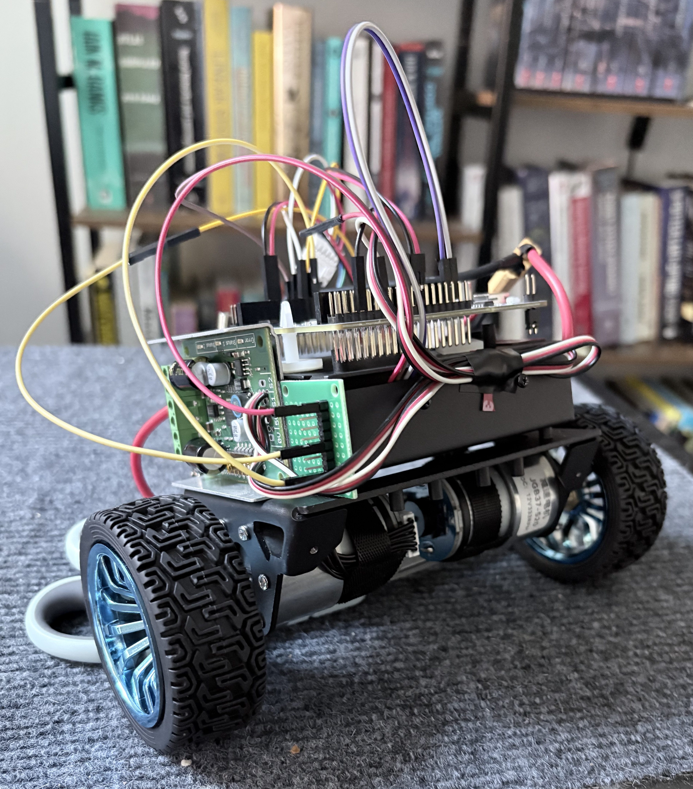
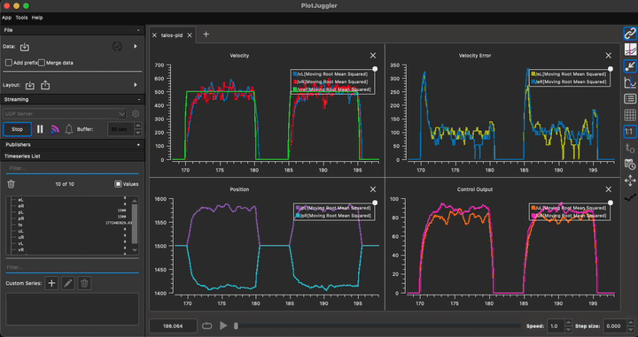

Talos
Autonomous Robot Engineering System


Icarus
Autonomous Rocket Engineering Simulation
Phase 4 — LQR
Replace balance PID with a linear quadratic regulator. Full state feedback on x = [θ, θ̇, v] with optimal gain matrix computed offline.
Phase 2 — 6-DOF Rotation
Euler angle attitude dynamics with gimbal-based thrust vector control. Full rotational state: roll, pitch, yaw, angular rates.